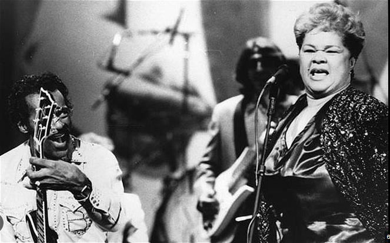

Shows en vivo durante toda su carrera

Algunos de los shows en los cuales se presentó:
Etta James - Something's Got A Hold On Me (Live)
Etta James - I'd Rather Go Blind (Live at Montreux 1975)
Etta James "Tell Mama" on "Happening '68" U.S. TV 2/17/68
Etta James - I'm Sorry For You (Live)
Santana, John Lee Hooker and Etta James | Full Concert at Fillmore Auditorium (1986)